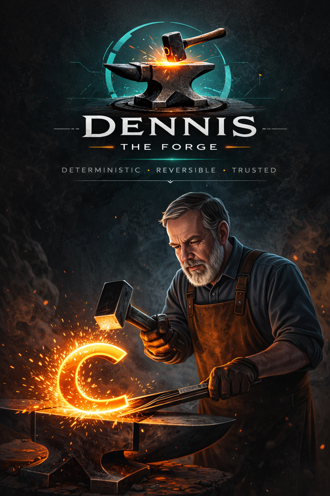

Transformaciones deterministas.
Resultados en los que puedes confiar.
Genera planes de transformación deterministas, decide qué realmente importa, empaquétalos como artefactos firmados (DEX) y aplica cambios a gran escala con trazabilidad completa.
Dennis Forge es un motor determinista de transformaciones para proyectos de software. Genera planes revisables por humanos, los empaqueta como artefactos firmados (DEX) y permite aplicar cambios de forma segura y trazable. Sin magia. Sin dependencia. Solo control.
Nueva funcionalidad: Dennis ahora puede verificar los cambios aplicados mediante un sistema de diff determinista y consciente de Git. Esto convierte las transformaciones en evidencia reproducible, no solo en ejecución.
DEX significa Deterministic EXchange artifact. Dennis no solo extrae cambios — primero decide qué es realmente significativo.

¿Qué es Dennis?
Dennis es un motor determinista de transformaciones para proyectos de código. Te permite planear, inspeccionar y ejecutar cambios complejos sin perder control.
En lugar de modificar archivos directamente, genera un plan — un documento legible que describe exactamente qué cambiará.
Cada transformación es inspeccionable, exportable y reversible. Sin cajas negras. Sin magia. Solo claridad.
Artefactos DEX
Cada plan generado por Dennis puede empaquetarse como un artefacto DEX — un contenedor portable y verificable criptográficamente.
Los artefactos pueden cifrarse como XDEX, permitiendo distribuir transformaciones sin exponer su lógica interna.
Un DEX contiene el plan, metadatos y firmas opcionales. Puede inspeccionarse, compartirse y verificarse antes de ejecutarse.
Gracias a su naturaleza determinista, permite trazabilidad completa y auditoría real.
Inicio rápido
pipx install dennisdennis plan ./tu-proyecto
dennis diff-dir ./antes ./despues
También puedes comparar el estado antes y después de una transformación. Dennis utiliza archivos rastreados por Git cuando están disponibles, filtra ruido y genera diffs deterministas y verificables.
Genera un plan determinista que puedes inspeccionar, exportar y aplicar con seguridad.
Cómo funciona Dennis
- Escanear — Analizar el proyecto
- Decidir — Separar señal de ruido
- Planificar — Generar un plan determinista
- Empaquetar — Crear artefacto DEX
- Firmar — Firma criptográfica
- (opcional) — Cifrar como XDEX
- Verificar — Validar integridad
- Aplicar — Ejecutar con seguridad
El plan es la fuente de verdad.
Casos de uso reales
Diseñado para entornos donde los cambios deben ser verificables y auditables.
Refactorizaciones grandes
Planifica y revisa antes de aplicar.
Parches de seguridad
Distribuye cambios firmados.
Migraciones
Repetibles entre múltiples proyectos.
Auditoría
Registro completo de cambios.
Diff Determinista
Dennis incluye un sistema de diff diseñado para verificación, no solo visualización.
Al comparar dos estados de un proyecto, Dennis:
- Usa archivos rastreados por Git como fuente de verdad
- Filtra archivos binarios y ruido irrelevante
- Genera diffs estructurados y estables
- Garantiza resultados deterministas (misma entrada → mismo diff)
Esto permite tratar los cambios como evidencia verificable, no solo como una comparación visual.
dennis diff-dir ./antes ./despuesdennis test-diff
El objetivo: hacer los cambios reproducibles, auditables y confiables.
Seguridad y reversibilidad
Cada transformación es reversible por diseño.
Si puedes ver el plan, puedes revertirlo.
CLI y código abierto
Dennis es CLI-first y open source.
pipx install dennis
Sin lógica oculta. Todo es inspeccionable.
Local o nube
Puedes ejecutarlo completamente local o usar una versión hospedada.
Tus planes siguen siendo portables.
¿Por qué Dennis?
Porque transformar sistemas complejos sin control es peligroso.
Dennis convierte el cambio en algo visible, verificable y reversible.